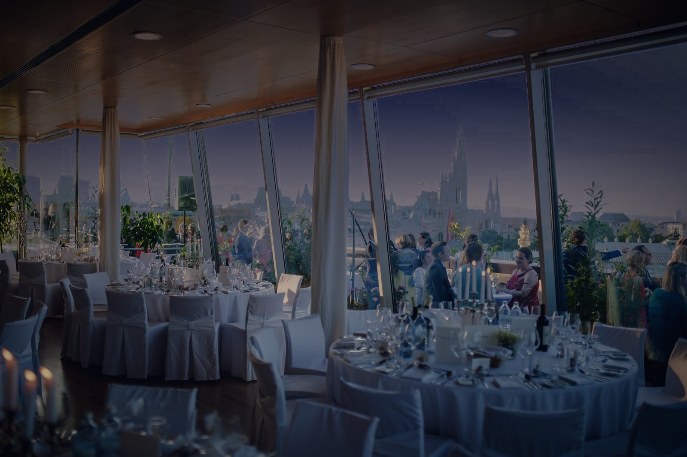
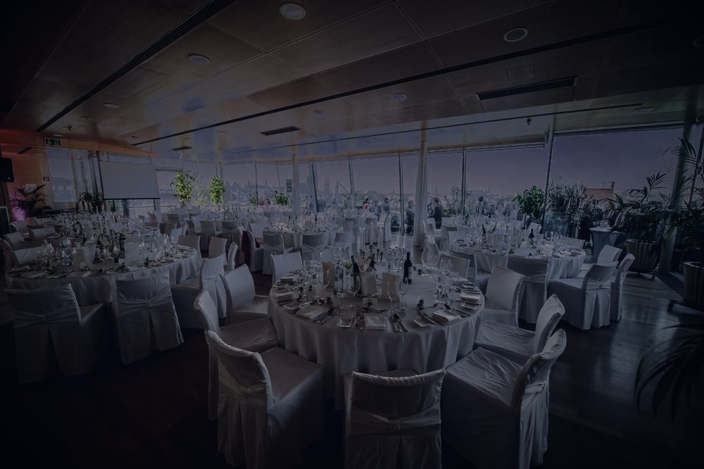
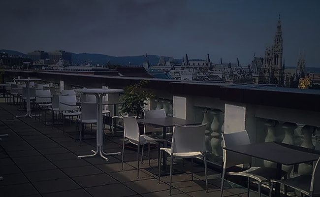

Die exklusive Silvester Party über der Skyline von Wien
Eine Nacht. Ein Ausblick. Nur 150 Gäste.
Zu Silvester öffnet das VIENERO das Justizcafé ganz oben im Justizpalast, mit Rundumblick über die Skyline der Stadt, vom Rathaus bis zum Parlament. Ein festliches 4-Gang-Menu mit frischem Trüffel, Champagner und um Mitternacht das Feuerwerk über ganz Wien. Danach legt der DJ auf, und die Party läuft bis 4 Uhr früh.

Sofort online buchen, 1 bis 4 Personen. Bezahlung mit Karte, Klarna oder eps. Vorauskasse, keine Rückerstattung. Ab 5 Personen bitte per Anfrage.
Das Silvester Menu
399 Euro pro Person. Inklusive Amuse Gueule, 4-Gang-Menu, einem Glas Champagner, Mineralwasser sowie DJ und Entertainment bis 4 Uhr früh. Einlass ab 18:30 Uhr. Weitere Getränke werden extra verrechnet. Limitiert auf 150 Gäste, Vergabe nur mit Vorauskasse.
Ins neue Jahr über der Skyline von Wien


Das Justizcafé liegt ganz oben im Justizpalast, einem der Prachtbauten an der Ringstraße. Von hier blicken Sie rundum über die Dächer und Kuppeln der Stadt, auf Rathaus, Parlament und die Lichter der Innenstadt. Um Mitternacht leuchtet das Feuerwerk über ganz Wien, und Sie stoßen genau dort an, wo man es am besten sieht.
Gillardeau Austern mit Rotwein Balsamico Schalotten Vinaigrette als Gruß aus der Küche, dann Tatar vom Rind, vom Lachs und von Pilzen, eine Trüffel Parmesan Suppe mit frischem Trüffel, danach Trüffel Gnocchi mit Black Tiger Garnelen, Beef Steak Schaschlik oder Lachsfilet auf Safranrisotto. Zum Finale das Schoko Soufflé mit Bourbon Vanille Eis und einem Glas Champagner.
Gekocht und serviert wird vom Team des VIENERO.
Dann wird gefeiert
Nach dem Dessert wird aus dem Dinner eine Party. Der DJ legt auf, das Entertainment übernimmt, und um Mitternacht stoßen alle gemeinsam an, während unter Ihnen das Feuerwerk über Wien aufgeht. Getanzt wird bis 4 Uhr früh, hoch über der Ringstraße, mit nur 150 Gästen.
Wer lieber in unserem Restaurant am Stadtpark feiert, findet alles auf der Seite Silvester im VIENERO.
Häufige Fragen
Was ist im Preis von 399 Euro enthalten?
Amuse Gueule mit Gillardeau Austern, das 4-Gang-Menu mit Hauptgang zur Auswahl, ein Glas Champagner, Mineralwasser sowie DJ und Entertainment bis 4 Uhr früh. Weitere Getränke werden extra verrechnet.
Wann beginnt der Abend?
Einlass ist ab 18:30 Uhr, danach servieren wir das Menu. Gefeiert wird mit DJ und Entertainment bis 4 Uhr früh.
Wo ist das Justizcafé?
Im Justizpalast am Schmerlingplatz 10-11 in 1010 Wien, ganz oben im 5. Stock, mit dem Lift erreichbar.
Wer kocht im Justizcafé?
Das Team des VIENERO. Küche und Service kommen aus unserem Restaurant am Stadtpark.
Wie buche ich?
Über den Button Platz sichern: Sie wählen 1 bis 4 Personen, geben Ihre Hauptspeisen an und bezahlen direkt online mit Karte, Klarna oder eps. Die Buchung ist sofort fix, eine Rückerstattung ist nicht möglich. Gruppen ab 5 Personen bitte per Anfrage an Reservierung@vienero.at oder 01 913 70 05.
Gibt es Silvester auch im VIENERO am Stadtpark?
Ja, im VIENERO am Dr.-Karl-Lueger-Platz gibt es ein eigenes Silvestermenu mit DJ. Alle Details stehen auf der Seite Silvester im VIENERO.
Ihr Abend auf einen Blick
Location
Justizcafé im Justizpalast
Schmerlingplatz 10-11
1010 Wien, 5. Stock
Google Maps
Silvester
31. Dezember 2026
Einlass ab 18:30 Uhr
4-Gang-Menu vom VIENERO
DJ und Entertainment bis 4 Uhr
Buchung
Limitiert auf 150 Gäste
Nur mit Vorauskasse
01 913 70 05
Reservierung@vienero.at